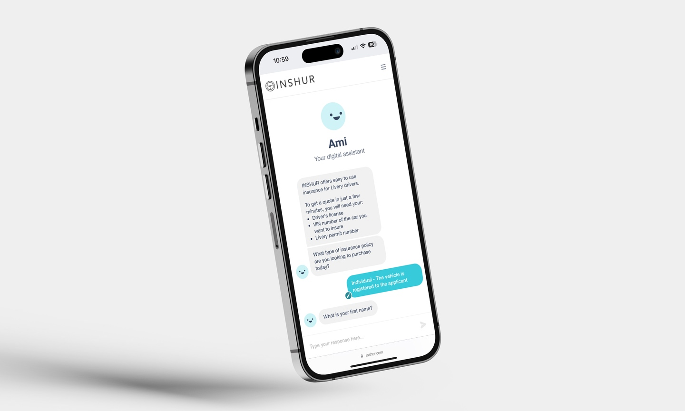
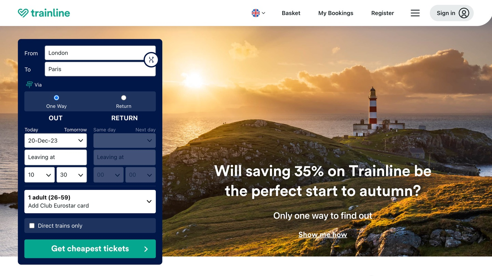

INSHUR

Full stack developer for INSHUR, helping design and build an insurance platform for Uber drivers and Amazon couriers.
Technologies: TypeScript, React, Apollo GraphQL, Node, NestJS, GCP, GitHub Actions
Trainline

Senior developer on the main Trainline website, helping to integrate European rail and bus companies into the booking flow.
Technologies: TypeScript, React, Redux, Node, RxJS, AWS, TeamCity
British Gas Hive

Microservices platform and mobile app allowing British Gas customers to view real-time energy usage from their smart meters.
Technologies: JavaScript, React, Node, UDP, WebSockets, Kafka, AWS, CruiseControl
JetStar

Mobile site for JetStar's flight booking system. Features include seat allocation, itinerary changes, check-in and flight status details. Built with Knockout.js and Durandal.
Citi Private Bank

Web-based tablet app providing Citi customers an insight into investment opportunities. Includes interactive charts that can be panned and pinched-to-zoom. Built with Backbone and D3.
ASICS

Website for tracking personal training and fitness. Features include training plans, progress trackers, and social integration with Facebook. Single-page app built in Backbone.
Mars Infographics

Selection of infographics for Mars outlining the company's performance in environmental policies. Interactive graphs built with D3.
ITV Triumph

Internal tool for ITV providing producers with guidelines for their pitching process. Web-based tablet app built using Backbone.
Flashkana for iPhone

A flashcards-style app for learning Japanese kana. Native iOS app built using Objective-C.
OK Go Shotcast

Realtime video filter for live OK Go performances. Fans were encouraged to tweet a hashtag that would allow their profile icon to be used in the pixelation effect. Built with Flash and PixelBender.
Focus Explorer

Interactive video-based app projected onto a 60" perspex screen covered with a touch-sensitive film. Used at multiple marketing events. Built with Flash.